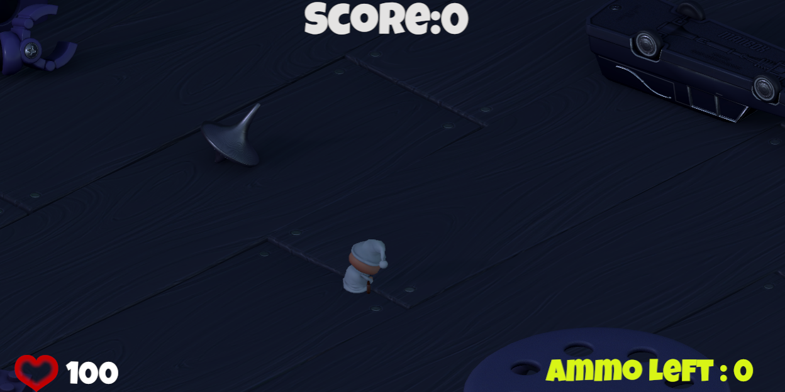
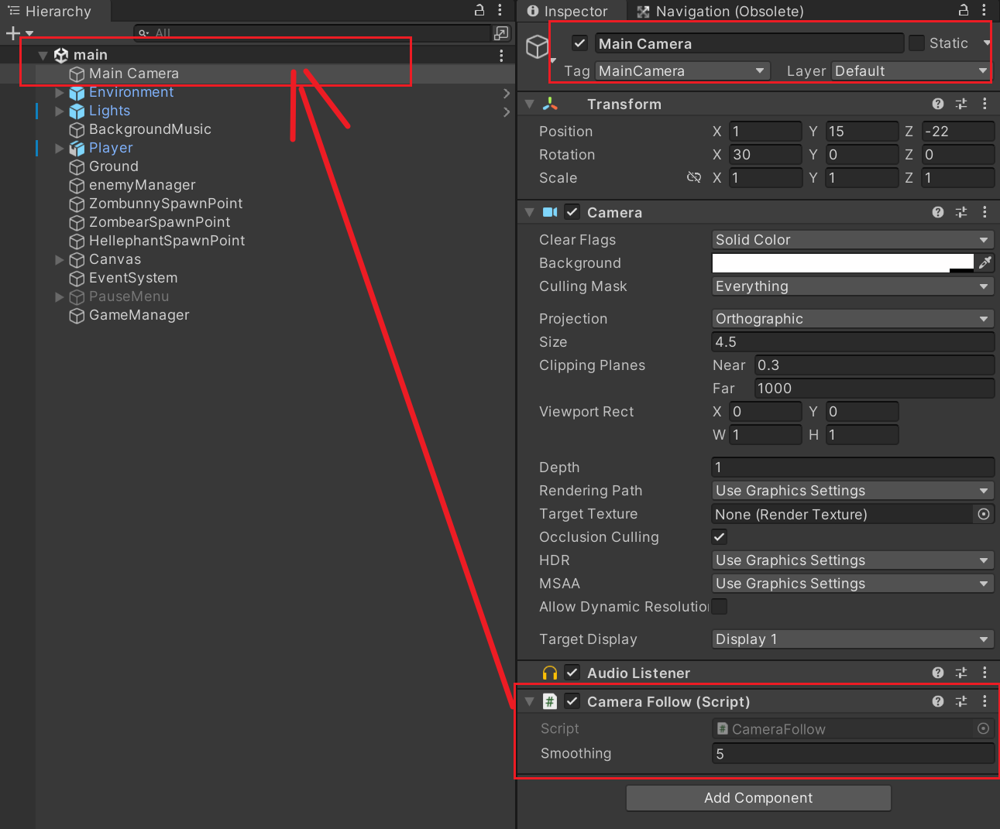
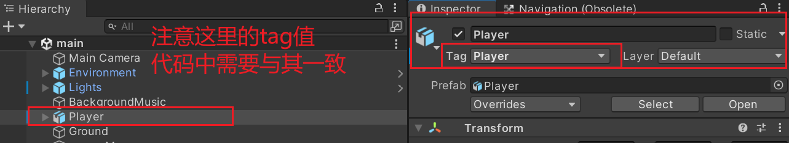

本模块主要分享一些在Unity中遇到的问题以及解决方法: 关于Unity中设置相机跟随玩家的移动。
在Unity中, 设置相机跟随玩家的移动是一个常见的需求。例如在第一、三人称视角游戏中, 相机需要跟随玩家移动, 以提供更好的游戏体验。 本篇将介绍如何使用Unity来实现相机跟随玩家的移动(以第三人称视角为例, 第一人称视角同理)。

首先, 我们需要做一些准备工作。
1. 创建一个物体, 并命名为"Player"。(这个物体用于表示玩家, 我们可以直接使用Player物体)
2. 准备一个相机, 并命名为"Camera"。(方便起见, 我们可以直接使用项目里自带的主相机)
3. 创建一个脚本, 并命名为"CameraFollow"。(这个脚本用于控制相机跟随玩家移动)
4. 将"CameraFollow"脚本挂载到"Camera"物体上。

private GameObject player; // 定义玩家物体
private Vector3 offset; // 定义了一个Vector3向量变量(注意是向量，有方向)
public float Smoothing = 5f;// 定义了平滑度(即相机跟随玩家移动的平滑程度)
private void Awake()
{
player =GameObject.FindGameObjectWithTag("Player");
}//根据tag获取游戏角色

private void Start()
{
offset = transform.position - player.transform.position; // 获取相机与玩家之间的距离
}
private void FixedUpdate()
{
transform.position = Vector3.Lerp(transform.position, offset + player.transform.position, Smoothing*Time.deltaTime) ;//相机跟随功能
}
至此, 一个简单的Unity相机跟随玩家移动功能就写好了。 方法不唯一, 在此只分享个人的拙见。感谢阅读！
其他内容待续...
⬅ 返回主页